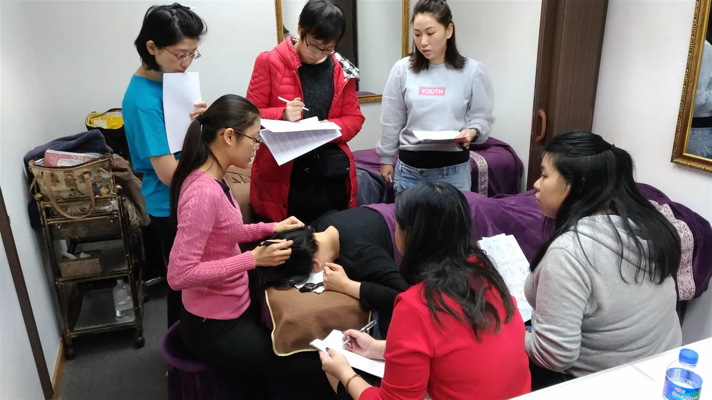

Aprendizaje gradual y estructurado
Comienza con una zona reducida y un único movimiento demostrado. Revisa las recomendaciones de colocación y confort antes de practicar.
The Bojin Method
🌐 EnglishAprende autocuidado facial y cervical con la instructora taiwanesa Yu-Ting Lan. Comienza por la ubicación, la dirección y un contacto confortable. No necesitas comprar ninguna herramienta para comenzar a explorar.
Ver el video gratuito Eye Reset (3 min)
Registro por correo en la siguiente página. ¿Prefieres leer primero? ¿Qué es el bojin facial?
La confianza de más de mil alumnas y alumnos: principiantes, abuelas y hombres incluidos.

Yu-Ting Lan, desde Taiwán · instructora de bojin
En qué consiste el método
En este sitio, el bojin facial (撥筋) se enseña como un ritual manual de autocuidado para rostro y cuello, prestando especial atención a la secuencia, la ubicación y un contacto confortable.
Quizás notas tensión acumulada tras horas de pantalla, una mandíbula rígida o un rostro que luce cansado tras una noche tranquila. Comienza observando esa experiencia sin apresurarte a verla como un problema clínico. Nuestras guías explican el enfoque pedagógico y sus límites honestos: no prometen eliminar arrugas ni alterar la estructura ósea facial.
Los recursos gratuitos introducen una idea o zona a la vez. Son materiales educativos de autocuidado, no tratamiento médico ni sustituto de asesoramiento individual. Lee la guía educativa completa sobre qué es el Bojin →
Por dónde empezar
Comprende los fundamentos, observa una técnica en video o guarda una guía para más tarde. No necesitas comprar ninguna herramienta para explorar.
Descubre lo que enseña el método, cómo abordar una demostración y qué verificar antes de practicar. Sin registro.
Explora fragmentos explicativos, mapas anatómicos y comparativas de movimiento para una zona concreta. Sin registro.
Una introducción en PDF para observar cinco zonas del rostro y cuello. Introduce tu correo en la siguiente página. No es diagnóstico.
Yu-Ting Lan, from Taiwan · founder of Héhé Studio (和合雅築).
Conoce a tu instructora
Soy instructora internacional de bojin y fundadora de Héhé Studio. Durante años enseñé esta disciplina de manera presencial, rostro a rostro, observando cómo personas que jamás habían sostenido una herramienta aprendían a percibir la tensión y liberarla por sí mismas.
Cuando la pandemia de 2020 detuvo las clases presenciales, rediseñé el programa completo para la enseñanza en línea, estructurado en pasos asimilables, con tareas prácticas y acompañamiento cercano, permitiendo que el método llegue intacto de mis manos a las tuyas. Mi objetivo es sencillo: brindarte un ritual sereno y sostenible en el tiempo, no un tratamiento pasajero.
Acreditaciones
1,000+
alumnas formadas, desde principiantes hasta abuelas
3
países donde he enseñado: Taiwán, Hong Kong y Malasia
2020
destacada en las “Top 100 Historias de Marca” de Taiwán
Founder of Héhé Studio (和合雅築) and an international aesthetics academy · certified as an instructor by three professional associations.
 Bojin course instructorAsia-Pacific International Cultural Exchange Institute · 2021–2023
Bojin course instructorAsia-Pacific International Cultural Exchange Institute · 2021–2023
 Appointed instructorTainan City Youth Employment Service Association · 2020
Appointed instructorTainan City Youth Employment Service Association · 2020
 Certified instructorChinese Traditional Health Care Education Association · 2023–2026
Certified instructorChinese Traditional Health Care Education Association · 2023–2026
The certificates are in Chinese. Tap one to see it full size. Personal details have been covered.
En el aula
Durante años, Yu-Ting enseñó The Bojin Method tal como lo ves aquí: en grupos reducidos y aulas completas, guiando las manos una a una hasta que la presión suave y precisa se vuelve natural. La formación en línea traslada esa misma enseñanza cercana y paciente de sus manos a las tuyas.


Cómo se estructura la enseñanza
Presta atención a estos tres aspectos clave mientras exploras nuestros recursos formativos.
Comienza con una zona reducida y un único movimiento demostrado. Revisa las recomendaciones de colocación y confort antes de practicar.
Las guías visuales destacan la orientación de la herramienta, el papel de la mano de apoyo y las líneas de movimiento.
Consulta nuestras guías de método y seguridad para conocer los límites de la práctica en casa con tranquilidad.
Una trayectoria demostrable
5.0★
valoración media en Google
324
reseñas en Google
598
recomendaciones en Facebook (100%)
1,000+
alumnas formadas
From Yu-Ting Lan's studio in Taiwan (和合雅築 SPA), where the Bojin Method was refined over a decade.
En sus propias palabras
Lo que comparten las alumnas tras aprender con Yu-Ting en Taiwán, Hong Kong y Malasia.
Recibí una sesión y aprendí bojin facial. Yu-Ting trabaja con un cuidado excepcional: fue reconfortante y sentí el rostro totalmente distendido. Explicó cada detalle.
En la clase personalizada me guio pacientemente paso a paso y corrigió mi postura. Muy profesional, y la diferencia fue evidente.
La profesora viajó especialmente desde Taiwán para enseñarnos en Hong Kong. Enseñó con tanta dedicación: clases muy prácticas y amenas. ¡Muchas gracias!
Tomé el curso de cabeza y rostro. Sus explicaciones claras y pacientes hicieron que, aun sin experiencia previa, lo aprendiera con facilidad. Una clase magnífica.
Me costó un día libre, pero gané muchísimo más de lo invertido. Incluso alguien con manos poco diestras como yo pudo aprender la técnica sin problemas. Muy recomendable.
Muy paciente en la enseñanza práctica. La clase debía terminar a las 5:30, pero se preocupó tanto que continuó hasta que todas dominamos el movimiento. Agradecida de haber encontrado a la profesora indicada.
Reseñas reales traducidas del chino tradicional. Las experiencias individuales varían. Autocuidado consciente, no es tratamiento médico.
Observa el resultado en un solo lado
La forma más directa de comprobar lo que logra el bojin: trabaja un lado del rostro, deja el otro intacto y obsérvate en el espejo. Mismo rostro, mismo día.
El lado trabajado luce sutilmente más despierto y elevado. Los resultados individuales varían; se trata de autocuidado suave, no de tratamiento médico.
Observa el método en acción
Un vistazo a Yu-Ting enseñando la técnica facial. La lección está en su mandarín natal, pero la precisión y suavidad de los movimientos se entienden por sí mismos.
 Ver la lección en YouTube
Ver la lección en YouTube

Diez minutos de calma al día. Eso es todo.
Comienza hoy
Comienza con el video gratuito de 3 minutos, la primera lección condensada del método. Es el punto de partida más suave y honesto.